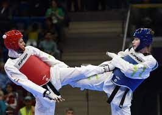

Css
Css Html
HtmlExperiences
2017-2019 : Custumer coach sur le site Boulanger.com à Boulanger Custumer Care Villeneuve d'Ascq
2016-2017 : Employé stagiaire au rayon électricité Leroy Merlin à Villeneuve d'Ascq (2 mois).
2015-2016 : Employé stagiaire au rayon informatique à Darty à Villeneuve d'Ascq (2 mois)
Formation
Novembre 2022 : Formation Développeur Web à AFCI Formation de Villeneuve d'Ascq
Novembre 2021 : Nurserie numérique à l'Euratechnologie
Juin 2017 : BTS MUC au lycée Raymond Queneau à Villeneuve d'Ascq.
Juin 2013 : Juin 2013: BAC STG comptabilité et finance des entreprises.
Centre d'intérêts
Jeux Vidéos
 Basketball
Basketball
Taekwondo